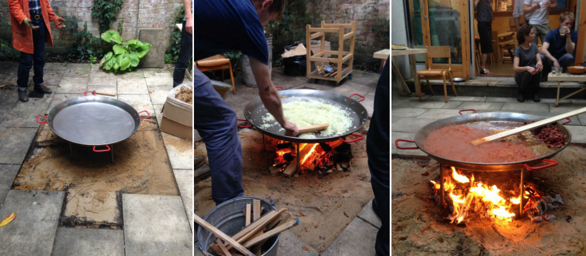
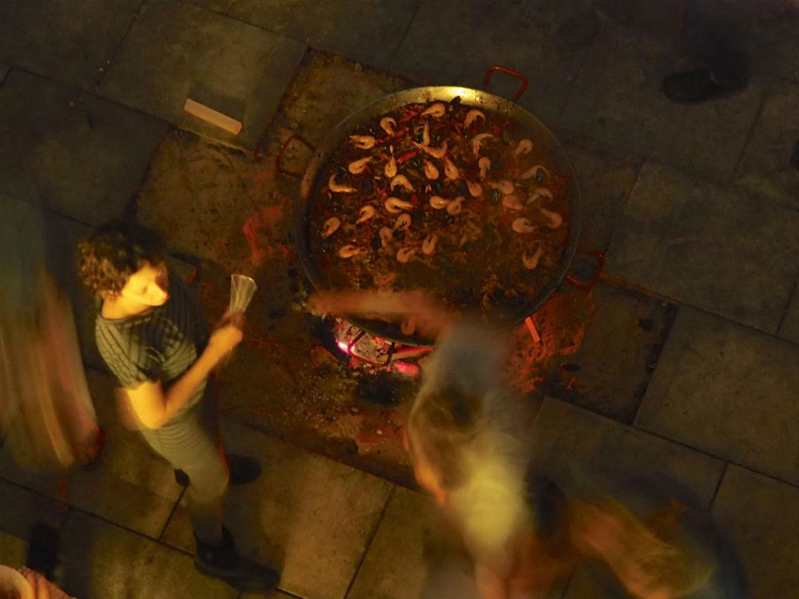
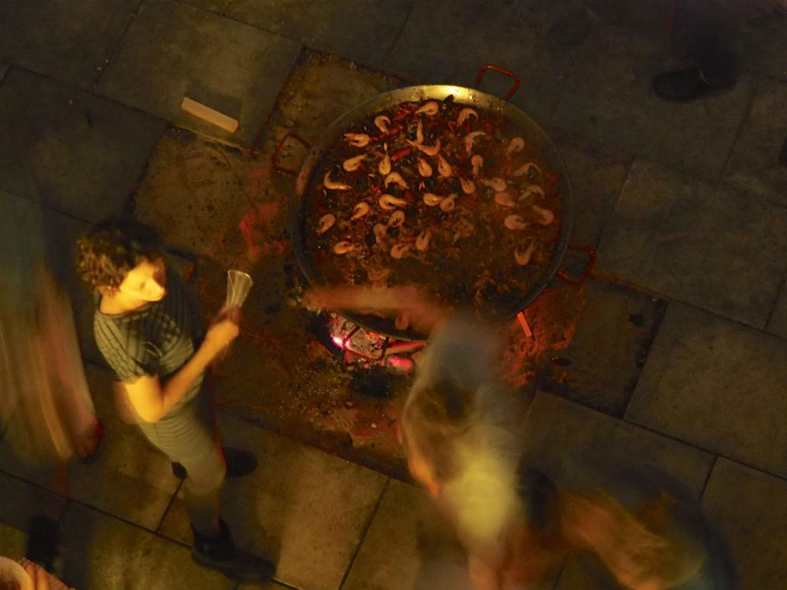

A Spanish evening
Monday, September 7th, 2015On a balmy Friday evening, the last in August, around 30 of us — guests, assistants and members — sat in the back courtyard around a small fire, then smoking coals, over which sat a 90cm (3ft) diameter pan attended to by Simon, Jack and Jeanetta. In it, paella with squid, prawns, mussels and chorizo simmered slowly. As it cooked, we ate finely cut slices of Jamón Ibérico, thick wedges of tortilla, salty padron peppers, tomato salad, almonds and olives.
Many hands made light work of preparation and later, the clearing up.
 
